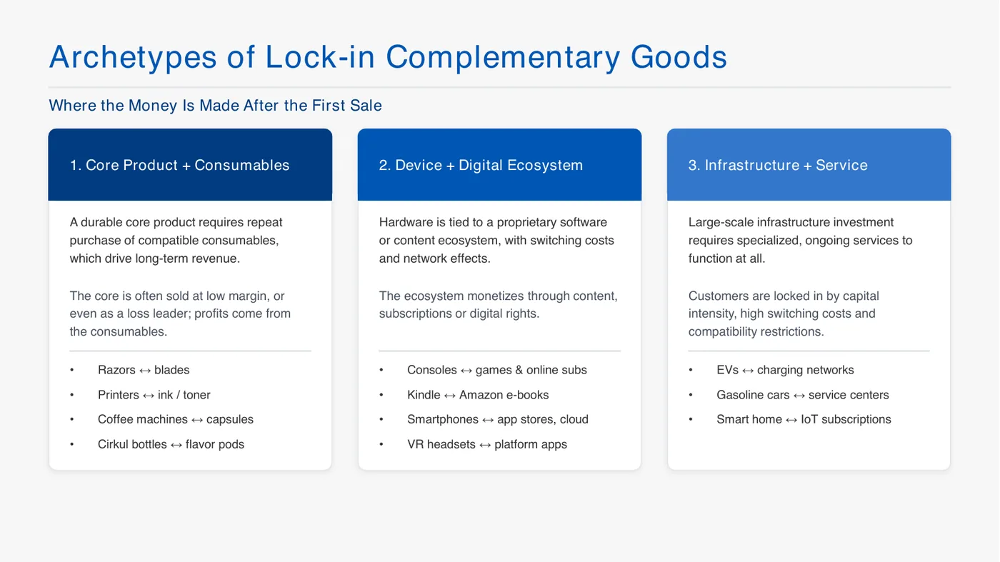
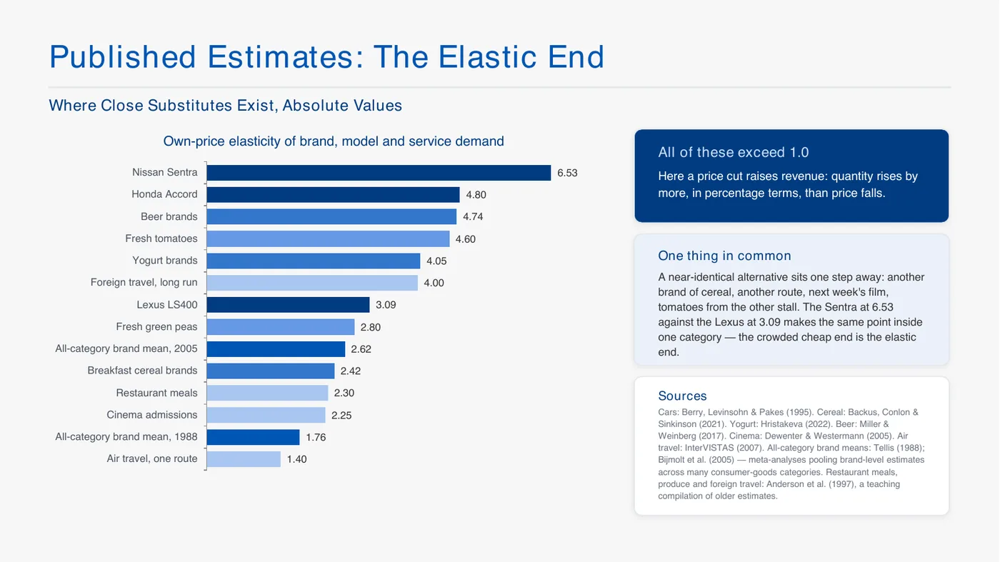
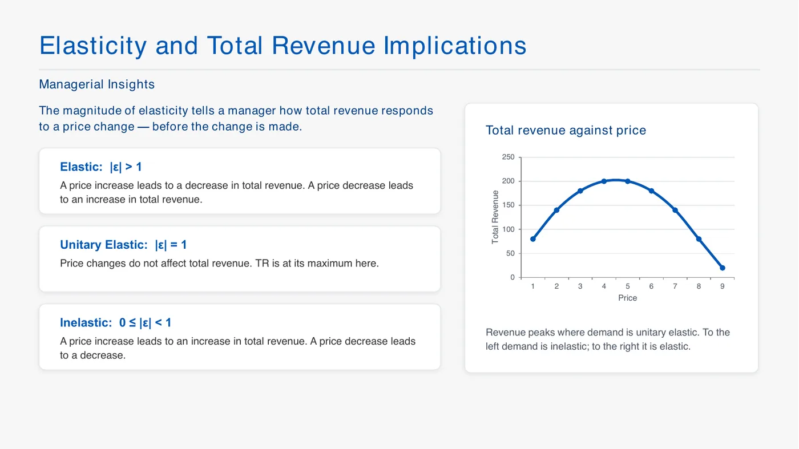
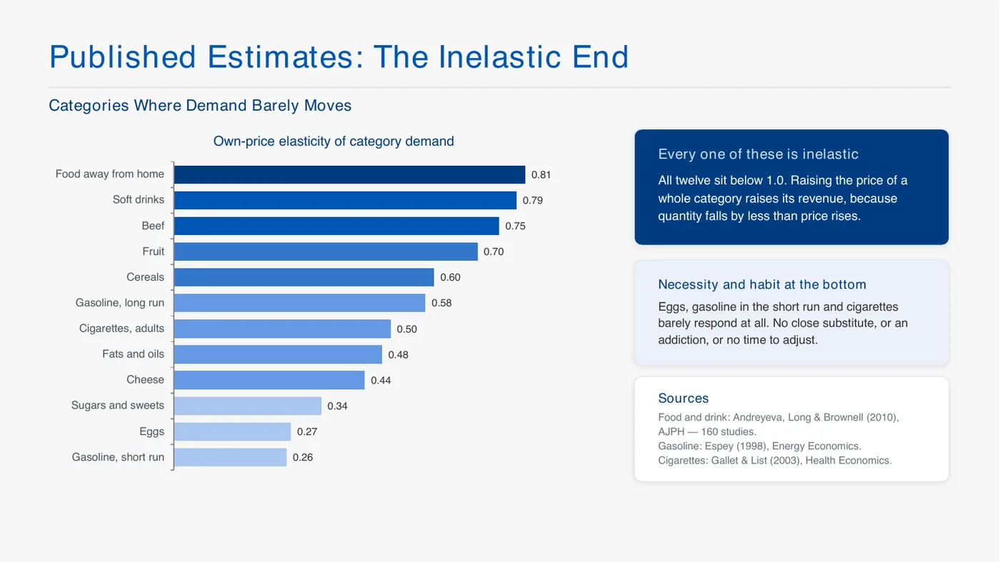
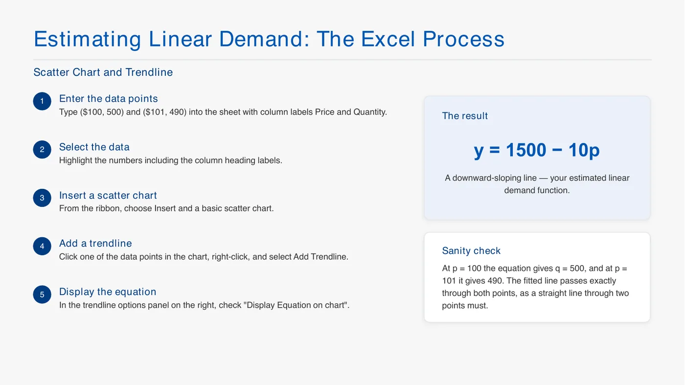
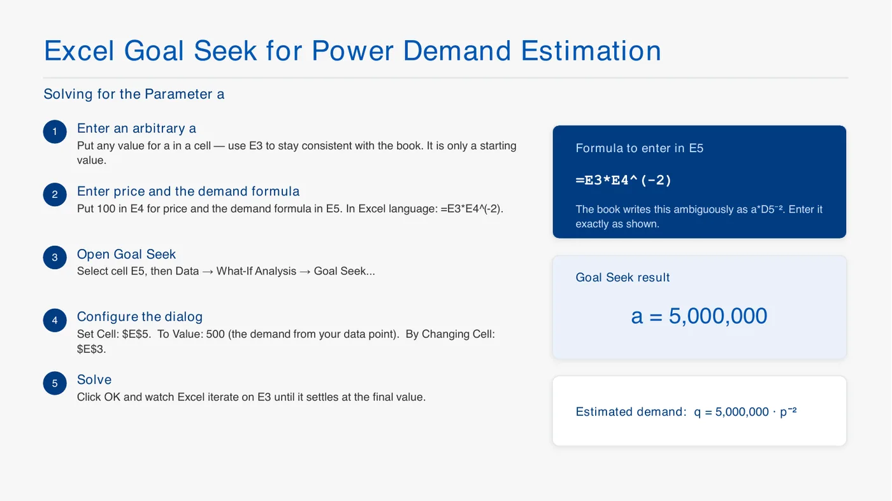
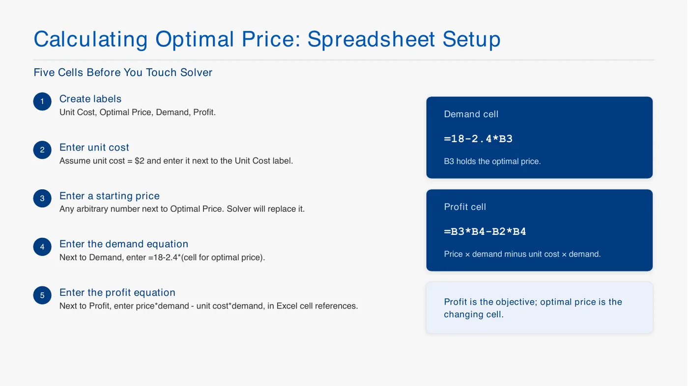
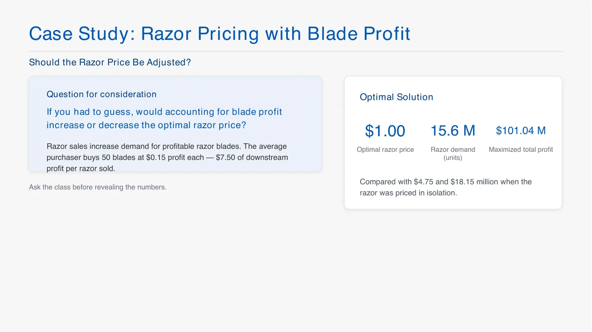
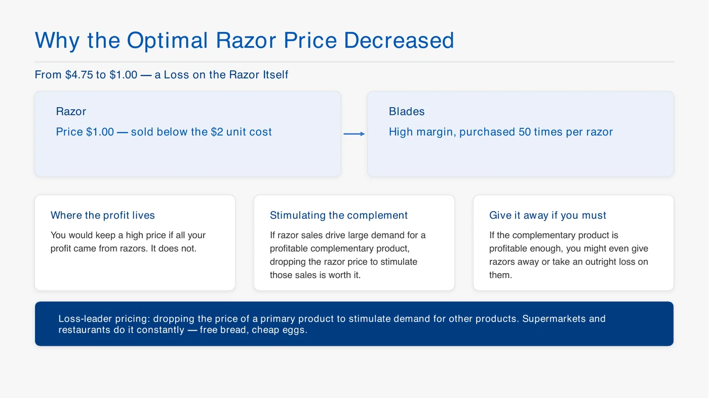

수요함수: 가격별로 사려는 양 = 소비자 지불용의(WTP)의 분포, 곡선의 높이는 그 수량에서 받을 수 있는 최고 가격, 수량이 늘수록 WTP는 낮아짐
가격탄력성 : 가격 1% 올릴 때 수량이 몇 % 변하나 (보통 음수), −2면 가격 1%↑ → 수량 2%↓
절댓값 1 초과 = 탄력적: 가격 올리면 매출 감소 / 1 미만 = 비탄력적: 가격 올리면 매출 증가 / 딱 1 = 단위탄력 (매출 TR = P × Q)
대체재가 많을수록 탄력적: 카테고리(음료 전체)는 비탄력, 브랜드(코크)는 탄력적 (브랜드 평균 약 −2.62)
선형 수요 : 곡선 따라 탄력성이 변함 / 거듭제곱 수요 : 탄력성이 항상 b → 탄력성을 알면 a만 추정하면 됨
이익 = (가격 − 단위원가) × 수량, 수량이 가격의 함수라 가격을 올리면 마진은 늘고 수량은 줄어듦 → 그 균형점이 최적 가격 (해 찾기로 구함)
대체재: 한쪽 가격↑ → 다른 쪽 수요↑ / 보완재: 같이 쓰는 재화, 한쪽 가격↑ → 다른 쪽 수요↓
보완재가 있으면 총이익(본체 + 소모품)으로 최적화 → 본체는 원가 아래로도 팔 수 있음 (면도기 $1)
보완재와 잠금 (교수님 설명)

4강 p18 보완재 잠금 유형
슬라이드: 고객을 묶어 두는 보완재 세 유형 (첫 판매 뒤에 돈을 버는 구조). ① 본체 + 소모품: 본체는 싸게(손해도), 소모품에서 이익 (면도기·날, 프린터·잉크, 커피머신·캡슐, Cirkul 물병·포드) ② 기기 + 디지털 생태계: 전환 비용과 네트워크 효과로 묶고 콘텐츠·구독으로 벎 (콘솔·게임, 킨들·전자책, 스마트폰·앱스토어, VR) ③ 인프라 + 서비스: 큰 투자·호환성 때문에 못 바꿈 (전기차·충전망, 자동차·정비소, 스마트홈·IoT 구독).
제조사끼리 호환 안 되게 만드는 이유 = 고객 잠금 (애플, 콘솔 게임, 앱스토어, 테슬라 충전)
경쟁 질문에 대한 학생 답: 호환 날을 싸게 파는 업체가 있으면 전략이 깨짐
탄력성 (교수님 설명)

4강 p8 탄력적 추정치
슬라이드: 브랜드·모델·서비스 수요의 탄력성 (절댓값). 닛산 센트라 6.53, 혼다 어코드 4.80, 맥주 브랜드 4.74 … 렉서스 LS400 3.09, 브랜드 평균(2005) 2.62, 시리얼 브랜드 2.42, 항공 한 노선 1.40 → 전부 1 초과 = 탄력적, 가격을 내리면 매출이 오름. 공통점은 거의 같은 대안이 바로 옆에 있다는 것. 같은 자동차인데 싼 센트라가 렉서스보다 탄력적 → 경쟁 많은 저가 쪽이 더 탄력적.
렉서스, 닛산 센트라 같은 브랜드·모델은 탄력적, 카테고리는 비탄력
탄력성은 상수가 아님: 목마를 때 물은 비탄력, 경기·소득·대체재에 따라 바뀜
양수인 경우 (학생 질문): 과시용 명품 / 메모리 반도체 가격 상승은 공급 쪽 이야기

4강 p6 탄력성과 매출
슬라이드: 탄력성 크기로 가격을 바꾸기 전에 매출 변화를 알 수 있음. 탄력적 (절댓값 1 초과): 가격 올리면 매출 감소 / 단위탄력 (딱 1): 가격을 바꿔도 매출 그대로, 여기서 매출 최대 / 비탄력 (1 미만): 가격 올리면 매출 증가. 오른쪽 그래프 = 가격에 따른 총매출, 가운데 꼭대기가 단위탄력이고 그 왼쪽(낮은 가격)은 비탄력, 오른쪽은 탄력적.
가격 1% 오를 때 수량이 몇 % 변하나, \|ε\| > 1이면 탄력적
매출 올리려고 가격 올릴 건 비탄력적인 쪽 (수업 질문 답)

4강 p7 비탄력적 추정치
슬라이드: 카테고리 전체 수요의 탄력성 (절댓값). 외식 0.81, 탄산음료 0.79, 소고기 0.75, 과일 0.70, 시리얼 0.60, 휘발유 장기 0.58, 담배 0.50 … 달걀 0.27, 휘발유 단기 0.26 → 12개 전부 1 미만 = 비탄력, 카테고리 가격을 올리면 매출이 오름. 맨 아래는 필수품·중독·조정할 시간이 없는 것들.
휘발유: 단기엔 기름 떨어지면 오늘 넣어야 해서 비탄력, 장기엔 차를 바꿀 수 있어 더 탄력
전기, 담배는 비탄력 → 전기는 공공 운영, 담배엔 세금
수요곡선 추정

4강 p12 선형 수요 추정
슬라이드: 선형 수요를 엑셀로 구하는 다섯 단계. ① Price, Quantity 제목으로 (100, 500), (101, 490) 입력 ② 제목 포함 선택 ③ 삽입 → 분산형 ④ 점 우클릭 → 추세선 추가 ⑤ 오른쪽 옵션에서 차트에 수식 표시 → y = 1500 − 10p. 검산: p = 100이면 500, 101이면 490.
현재 ($100, 500), ε = −2 → ($101, 490) → 추세선
실험으로 두 번째 점을 얻을 수도 있지만 너무 비싸게 시험하면 손님을 잃을 수 있음

4강 p14 목표값 찾기
거듭제곱 → 목표값 찾기로 a = 5,000,000
슬라이드: 거듭제곱 수요 q = a·p⁻²의 a를 목표값 찾기로 구하는 순서. ① E3에 아무 a (시작값일 뿐) ② E4에 가격 100, E5에 =E3*E4^(-2) ③ E5 선택 → 데이터 → 가상 분석 → 목표값 찾기 ④ 수식 셀 E5, 찾는 값 500 (현재 수요), 값을 바꿀 셀 E3 ⑤ 확인 → a = 5,000,000.
"지금까지는 사람이 함수 꼴을 가정했지만 요즘은 알고리즘(머신러닝)이 찾기도 함"
면도기만 팔 때

4강 p22 스프레드시트 준비
슬라이드: 해 찾기 전에 칸 다섯 개 준비. ① 라벨: 단위원가, 최적 가격, 수요, 이익 ② 원가 $2 ③ 가격 칸에 아무 시작값 (해 찾기가 바꿈) ④ 수요 칸 =18-2.4*B3 (B3 = 가격 칸) ⑤ 이익 칸 =B3*B4-B2*B4 (가격 × 수요 − 원가 × 수요). 이익 칸이 목표, 가격 칸이 변수 셀.
슬라이드: 해 찾기 실행. 데이터 → 해 찾기 → 목표 = 이익 칸 (최대), 변수 셀 = 가격 칸 → 해 찾기. 결과: 가격 $4.75, 수요 660만 개, 이익 $18.15M. 검산: 18 − 2.4 × 4.75 = 6.6으로 수요식과 맞음.
결과 $4.75, 660만 개, $18.15M (이때 날까지 더한 총이익은 $67.65M)
정수 제약 시연: 수량이 가격의 함수라 이 구조로는 정수로 못 묶음
날 이익까지 넣으면

4강 p26 날 이익 포함
슬라이드: 날 이익까지 넣으면 면도기 가격이 오를까 내릴까 (수업에서 먼저 물어본 질문). 한 명이 날 50개를 사고 개당 이익 $0.15 → 면도기 하나 팔 때마다 날에서 $7.50. 결과: 면도기 $1.00, 1,560만 개. 총이익은 슬라이드엔 $101.04M이라 적혀 있는데 계산하면 −15.6 + 117 = $101.4M. 면도기만 볼 때($4.75, $18.15M)와 비교.
면도기 1개당 날 50개, 날 1개당 이익 $0.15
날 이익 =G13*G12*G9, 총이익 =G11+G14 → 목표 셀만 총이익으로 바꿔서 다시 해 찾기
결과 $1.00, 1,560만 개 → 면도기 이익 −$15.6M, 날 이익 $117M, 총이익 $101.4M, 날 판매 G16 =G9*G12 = 7.8억 개
원가 $2보다 싸게 팔아 면도기에선 손해, 날에서 벎

4강 p27 면도기 가격이 내려간 이유
슬라이드: 가격이 $4.75에서 $1.00으로 내려간 이유. 면도기는 원가 $2보다 싸게 팔아 손해, 날은 마진이 높고 면도기당 50번 팔림. 이익이 면도기에서 나오는 게 아니니 면도기를 싸게 해서 날 판매를 늘리는 게 이득, 날 이익이 충분히 크면 공짜로 줘도 됨. 이게 미끼 상품(loss leader) 가격: 마트·식당의 공짜 빵, 싼 달걀.
교수님: "우리는 면도기만 파는 게 아님" → 관련 제품은 총이익으로 최적화
(교수님 질문) 탄력성을 −0.3으로 바꾸면? → 가격 내려도 별로 안 더 팔려서 가격이 올라감 (내가 다시 계산하면 약 $8.08)